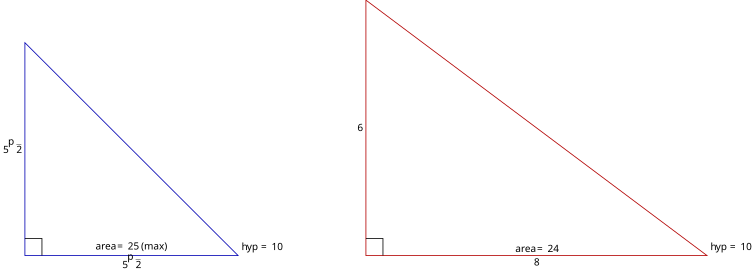

21 二次函数（Quadratic Functions）
上一章我们把直线的方程
视作坐标平面上满足某代数约束的点集，并用斜率、截距、距离等工具刻画直线。再往前，第十九章在函数的集合论定义下引入了线性函数 ，其图像恰是一条直线。 比直线再复杂一阶的函数，是首项为二次的函数。它的图像不再是直线，而是一条称为抛物线 (parabola) 的曲线。本章将以二次函数为载体，把上一章建立的「方程视角 + 集合视角 + 几何视角」三重对照推广到曲线上。
本章与第十八章关系密切。第十八章从代数角度研究了一元二次方程
的根：判别式 决定根的个数与性质，韦达定理揭示根与系数的关系。本章将从函数图像角度重新审视这些结论。 本章按概念依赖的顺序铺排：先定义二次函数、零点与截距（§21.1），再用配方法作代数变形（§21.2），由此引入函数最值的一般定义（§21.3），进而定义顶点与开口方向（§21.4）与对称轴（§21.5）。有了这些概念，才能分析系数的几何角色（§21.6），建立二次函数与二次方程的数形结合联系（§21.7），并应用于抛物线上的几何问题（§21.8）。
21.1 二次函数的定义、零点与截距 (Definition, Zeros, and Intercepts)
本节难度上限：T B- ｜ C C ｜ E B ｜ Q C
本节定义二次函数，建立其集合论表述，引入函数零点的一般概念，并讨论抛物线与坐标轴的交点。
21.1.1 二次函数的定义
设
称为二次函数 (quadratic function)。表达式
称为二次函数的一般式 (general form)，其图像
称为抛物线 (parabola)。
easy-tikz · 63 行
{
"dimension": false,
"documentSetup": true,
"title": "二次函数的图像",
"size_x_cm": 10,
"size_y_cm": 10,
"show_axis_label": true,
"axis_label_x": "x",
"axis_label_y": "y",
"documentClose": true,
"showAxis": true,
"showLargeGrid": false,
"showSmallGrid": false,
"gridSize": 5,
"xmin": "-2.80293",
"xmax": "5.1363",
"ymin": "-1.36559",
"ymax": "4.13443",
"axis_style": "middle",
"functions": [
{
"expression": "x^2+x-1",
"domain": "-3:3",
"showLegend": true,
"fill": false,
"fillOpacity": 0.2,
"fillPattern": "solid",
"tangent": false,
"dashed": false,
"tangentPoint": "",
"extrema": false,
"color": "blue",
"thickness": "thin",
"parametric": false,
"expressionY": "",
"name": "f1"
}
],
"zmin": "-5",
"zmax": "5",
"axis_label_z": "z",
"rotationX": 30,
"rotationZ": 45,
"zoom3D": 1,
"boxAspect": "true",
"functions3D": [],
"majorTickNum": 8,
"previewSize": 760,
"annotations": [
{
"x": "3.028",
"y": "1.04",
"text": "f(x) = x^2+x-1 的图像，被命名为抛物线",
"color": "black",
"size": "large",
"anchor": "above"
}
],
"tools": [],
"coordinateSystem": "cartesian",
"axis_label_x_polar": "",
"axis_label_y_polar": ""
}有几个要点需要说明。
- 为何要求
- 关于符号
或
- 函数、表达式与图像的区分：函数
- 「抛物线」一词的溯源：希腊文 παραβολή (parabolē) 意为「比较、并列」，由古希腊数学家阿波罗尼斯 (Apollonius) 在《圆锥曲线论》中首次用来命名这类曲线。抛物线是圆锥曲线的一种，本章只研究其作为二次函数图像的代数性质；其作为圆锥曲线的几何定义（到定点与定直线等距的点的轨迹）已在 轨迹 §30.1.2 给出，焦点、准线与标准方程见该书 §30.3。
判断下列函数哪些是二次函数，并指出一般式中的
(a)
(b)
(c)
(d)
(a) 是二次函数，
(b) 展开：
是二次函数，
(c)
(d) 展开：
是二次函数，
21.1.2 函数的零点
在讨论二次函数图像与坐标轴的交点之前，先引入「零点」的概念。这个概念适用于任何函数，不限于二次函数。
设
函数
easy-tikz · 96 行
{
"dimension": false,
"documentSetup": true,
"title": "函数的零点",
"size_x_cm": 10,
"size_y_cm": 10,
"show_axis_label": true,
"axis_label_x": "x",
"axis_label_y": "y",
"documentClose": true,
"showAxis": true,
"showLargeGrid": false,
"showSmallGrid": false,
"gridSize": 5,
"xmin": "-0.81851",
"xmax": "9.68141",
"ymin": "-2.26303",
"ymax": "3.23681",
"axis_style": "middle",
"functions": [
{
"expression": "cos(x)",
"domain": "0:2*PI",
"showLegend": false,
"fill": false,
"fillOpacity": 0.2,
"fillPattern": "solid",
"tangent": false,
"dashed": false,
"tangentPoint": "",
"extrema": false,
"color": "teal",
"thickness": "thin",
"parametric": false,
"expressionY": "",
"name": "f(x)"
},
{
"expression": "0",
"domain": "-10:10",
"showLegend": false,
"fill": false,
"fillOpacity": 0.2,
"fillPattern": "solid",
"tangent": false,
"dashed": false,
"tangentPoint": "",
"extrema": false,
"color": "black",
"thickness": "thin",
"parametric": false,
"expressionY": "",
"name": "f2"
}
],
"zmin": "-5",
"zmax": "5",
"axis_label_z": "z",
"rotationX": 30,
"rotationZ": 45,
"zoom3D": 1,
"boxAspect": "true",
"functions3D": [],
"majorTickNum": 8,
"previewSize": 760,
"annotations": [
{
"x": "1.363",
"y": "-0.391",
"text": "零点1",
"color": "black",
"size": "large",
"anchor": "above"
},
{
"x": "5.008",
"y": "-0.349",
"text": "零点2",
"color": "black",
"size": "large",
"anchor": "above"
}
],
"tools": [
{
"type": "intersection",
"func1Name": "f(x)",
"func2Name": "f2",
"color": "red",
"showLabels": true
}
],
"coordinateSystem": "cartesian",
"axis_label_x_polar": "",
"axis_label_y_polar": ""
}该图展示某个函数的零点（图中红色的点），这些点的纵坐标都是零，这对应了满足
求下列函数的零点：
(a)
(b)
(c)
(a) 解
(b) 解
(c) 解
21.1.3 截距
抛物线与坐标轴的交点称为截距 (intercept)。本小节讨论
抛物线与
设抛物线
即
故
反之，
注意：抛物线恒与
easy-tikz · 75 行
{
"dimension": false,
"documentSetup": true,
"title": "抛物线的 y 轴截距",
"size_x_cm": 10,
"size_y_cm": 10,
"show_axis_label": false,
"axis_label_x": "x",
"axis_label_y": "y",
"documentClose": true,
"showAxis": true,
"showLargeGrid": false,
"showSmallGrid": false,
"gridSize": 5,
"xmin": "-4.13762",
"xmax": "8.16794",
"ymin": "-1.42627",
"ymax": "10.8793",
"axis_style": "middle",
"functions": [
{
"expression": "-1 * x^2-3*x+5",
"domain": "-20:20",
"showLegend": true,
"fill": false,
"fillOpacity": 0.2,
"fillPattern": "solid",
"tangent": false,
"dashed": false,
"tangentPoint": "",
"extrema": false,
"color": "blue",
"thickness": "thin",
"parametric": false,
"expressionY": "",
"name": "f1"
}
],
"zmin": "-5",
"zmax": "5",
"axis_label_z": "z",
"rotationX": 30,
"rotationZ": 45,
"zoom3D": 1,
"boxAspect": "true",
"functions3D": [],
"majorTickNum": 8,
"previewSize": 760,
"annotations": [
{
"x": "4.292",
"y": "4.793",
"text": "图像与 y 轴的交点便是 y 轴截距。",
"color": "black",
"size": "large",
"anchor": "above"
}
],
"tools": [
{
"type": "segment",
"x1": "2",
"y1": "5",
"x2": "0",
"y2": "5",
"color": "red",
"thickness": "thin",
"dashed": false,
"arrow": "forward"
}
],
"coordinateSystem": "cartesian",
"axis_label_x_polar": "",
"axis_label_y_polar": ""
}判别式
第十八章 §18.2.1 已从代数角度定义判别式并证明其与根的关系。此处重新陈述，供本章后续引用。
对二次函数
并称为其判别式。
下面回顾第十八章 §18.2.1 已证明的判别式与根的性质定理，供本章后续引用。
设二次方程
| 根在 |
|
|---|---|
| 两个相异的实数根 | |
| 一个实数二重根 |
|
| 两个相异的非实复数根，互为共轭 |
先给出
设
其元素个数由判别式决定：
| 交集的元素个数 | 几何情形 | |
|---|---|---|
| 抛物线与 |
||
| 抛物线与 |
||
| 抛物线与 |
第一步（集合论等价）。
抛物线
把
由 §21.1.2 零点的定义，
这一步把三件事焊接在一起：几何（交点）
第二步（基数判定）。
由定理（判别式与根的性质）：
easy-tikz · 145 行
{
"dimension": false,
"documentSetup": true,
"title": "二次函数与 x 轴的交点情况",
"size_x_cm": 14,
"size_y_cm": 10,
"show_axis_label": false,
"axis_label_x": "x",
"axis_label_y": "y",
"documentClose": true,
"showAxis": true,
"showLargeGrid": false,
"showSmallGrid": true,
"gridSize": 6,
"xmin": "-7.56846",
"xmax": "6.8969",
"ymin": "-5.35641",
"ymax": "9.10892",
"axis_style": "middle",
"functions": [
{
"expression": "(x+3)^2",
"domain": "-9:9",
"showLegend": false,
"fill": false,
"fillOpacity": 0.2,
"fillPattern": "solid",
"tangent": false,
"dashed": false,
"tangentPoint": "",
"extrema": false,
"color": "black",
"thickness": "thin",
"parametric": false,
"expressionY": "",
"name": "f1"
},
{
"expression": "-1*x^2+2",
"domain": "-10:10",
"showLegend": false,
"fill": false,
"fillOpacity": 0.2,
"fillPattern": "solid",
"tangent": false,
"dashed": false,
"tangentPoint": "",
"extrema": false,
"color": "blue",
"thickness": "thin",
"parametric": false,
"expressionY": "",
"name": "f2"
},
{
"expression": "(x-3)^2+2",
"domain": "-10:10",
"showLegend": false,
"fill": false,
"fillOpacity": 0.2,
"fillPattern": "solid",
"tangent": false,
"dashed": false,
"tangentPoint": "",
"extrema": false,
"color": "red",
"thickness": "thin",
"parametric": false,
"expressionY": "",
"name": "f3"
},
{
"expression": "x=0",
"domain": "-9:9",
"showLegend": false,
"fill": false,
"fillOpacity": 0.2,
"fillPattern": "solid",
"tangent": false,
"dashed": false,
"tangentPoint": "",
"extrema": false,
"color": "black",
"thickness": "thin",
"parametric": false,
"expressionY": "",
"name": "f4"
}
],
"zmin": "-5",
"zmax": "5",
"axis_label_z": "z",
"rotationX": 30,
"rotationZ": 45,
"zoom3D": 1,
"boxAspect": "true",
"functions3D": [],
"majorTickNum": 10,
"previewSize": 780,
"annotations": [
{
"x": "-3.011",
"y": "-1.42",
"text": "恰好一个交点",
"color": "black",
"size": "large",
"anchor": "above"
},
{
"x": "2.9",
"y": "-2.628",
"text": "两个交点",
"color": "black",
"size": "large",
"anchor": "above"
},
{
"x": "2.965",
"y": "2.576",
"text": "没有交点",
"color": "black",
"size": "large",
"anchor": "above"
}
],
"tools": [
{
"type": "intersection",
"func1Name": "f2",
"func2Name": "f4",
"color": "red",
"showLabels": false
},
{
"type": "intersection",
"func1Name": "f1",
"func2Name": "f4",
"color": "blue",
"showLabels": true
}
],
"coordinateSystem": "cartesian",
"axis_label_x_polar": "",
"axis_label_y_polar": ""
}图 21-1：判别式三种情形对应的抛物线与
- 左：
- 中：
- 右：
求下列抛物线与
(a)
(b)
(c)
(a) 解方程
(b) 解方程
(c) 解方程
21.2 配方法 (Completing the Square)
本节难度上限：T C+ ｜ C C+ ｜ E C ｜ Q C
本节用配方法把一般式作代数变形，为后续定义顶点与对称轴做准备。配方法是纯代数技巧，不涉及几何概念。
第十八章 §18.1.3 曾用配方法解一元二次方程，其代数技巧是「在二次项与一次项后补上一个常数，凑成完全平方式」。本章将同一技巧用于函数表达式。
对于二次函数
记
则
此形式称为二次函数的顶点式 (vertex form)。
从一般式出发，逐步配方：
其中
直接记忆
- 先求
- 再把
此策略只需记住
\begin{document}
\begin{tikzpicture}[scale = 2]
\begin{axis}[
width=10cm, height=6cm,
xmin=-2, xmax=5, ymin=-2, ymax=6,
axis lines=middle,
xlabel={
52 行
图 21-2：配方法不改变函数本身。$y = x^2 - 4x + 3$ 与 $y = (x - 2)^2 - 1$ 是同一条抛物线的两种表达式。
````ad-example
title: 示例（配方法：一般式化为顶点式） | Example（Completing the Square）
把下列二次函数化为顶点式，并写出 $h$ 与 $k$：
(a) $f(x) = x^2 - 6x + 5$
(b) $f(x) = 2x^2 + 8x + 7$
(c) $f(x) = -x^2 + 4x - 1$
---
(a) $f(x) = x^2 - 6x + 5$
配方（$a = 1$，一次项系数 $-6$，一半为 $-3$，平方为 $9$）：
$$\begin{aligned}
f(x) &\equiv (x^2 - 6x + 9) - 9 + 5 \\
&\equiv (x - 3)^2 - 4
\end{aligned}$$
顶点式：$f(x) \equiv (x - 3)^2 - 4$，故 $h = 3$，$k = -4$。
(b) $f(x) = 2x^2 + 8x + 7$
先提取 $2$：
$$f(x) \equiv 2(x^2 + 4x) + 7$$
在括号内配方（一次项系数 $4$，一半为 $2$，平方为 $4$）：
$$\begin{aligned}
f(x) &\equiv 2(x^2 + 4x + 4 - 4) + 7 \\
&\equiv 2(x + 2)^2 - 8 + 7 \\
&\equiv 2(x + 2)^2 - 1
\end{aligned}$$
顶点式：$f(x) \equiv 2(x + 2)^2 - 1$，故 $h = -2$，$k = -1$。
验证：$h = -\dfrac{b}{2a} = -\dfrac{8}{2 \cdot 2} = -2$，$k = f(-2) = 2 \cdot 4 + 8 \cdot (-2) + 7 = -1$。正确。
(c) $f(x) = -x^2 + 4x - 1$
提取 $-1$：
$$f(x) \equiv -(x^2 - 4x) - 1$$
在括号内配方（一次项系数 $-4$，一半为 $-2$，平方为 $4$）：
$$\begin{aligned}
f(x) &\equiv -(x^2 - 4x + 4 - 4) - 1 \\
&\equiv -(x - 2)^2 + 4 - 1 \\
&\equiv -(x - 2)^2 + 3
\end{aligned}$$
顶点式：$f(x) \equiv -(x - 2)^2 + 3$，故 $h = 2$，$k = 3$。21.3 函数的最值 (Extremum of a Function)
本节难度上限：T B- ｜ C D ｜ E B ｜ Q C
本节引入函数最大值与最小值的一般定义。第十九章引入了函数的概念，但未正式定义最值。本章是全课程首次需要最值概念的章节，定义在此处引入最恰当。此定义不限于二次函数。
设
- 若存在
- 若存在
几点说明：
- 「最大值」是函数值
- 定义中的不等式要对所有
- 函数未必有最大值或最小值。例如
若函数
设
由
由
由
最小值同理。
最大值点不唯一的例子：常数函数
设
(a)
(b)
(c)
(a)
(b)
(c)
结论：同一表达式，定义域不同则最值不同。最值是函数整体的性质，依赖于定义域。
21.4 顶点与开口方向 (Vertex and Opening Direction)
本节难度上限：T B- ｜ C C ｜ E B ｜ Q D
本节用配方法与最值定义顶点。顶点式
中的项 恒非负，这是证明的关键。
由 §21.2 的配方法，二次函数
设
- 若
- 若
情形
对任意
当且仅当
由最小值的定义，
无最大值：对任意
情形
对任意
当且仅当
由最大值的定义，
无最小值：同理可证
由上述定理，不论
设
设
由配方法可直接读出顶点坐标。
对于二次函数
实用策略：先求
由 §21.2 的配方法，
\begin{document}
\begin{tikzpicture}
\begin{axis}[
width=10cm, height=6.5cm,
xmin=-2, xmax=4, ymin=-3, ymax=4,
axis lines=middle,
xlabel={
% 顶点
\node[circle, fill=red!70!black, inner sep=2pt] at (axis cs:1,-2) {};
\node[anchor=west, font=\tiny] at (axis cs:1.1,-2) {
25 行
图 21-3：抛物线 $G_f$（表达式 $y = x^2 - 2x - 1$）的顶点 $(1, -2)$（红点）。$a = 1 > 0$，开口向上，顶点是最低点。
````ad-example
title: 示例（由顶点式还原一般式） | Example（Converting Vertex Form to General Form）
已知二次函数的顶点式为 $y = -2(x + 1)^2 + 5$，将其还原为一般式，并写出顶点坐标。
---
展开顶点式：
$$\begin{aligned}
y &\equiv -2(x + 1)^2 + 5 \\
&\equiv -2(x^2 + 2x + 1) + 5 \\
&\equiv -2x^2 - 4x - 2 + 5 \\
&\equiv -2x^2 - 4x + 3
\end{aligned}$$
一般式：$y = -2x^2 - 4x + 3$，故 $a = -2$，$b = -4$，$c = 3$。
顶点：由顶点式 $y = -2(x + 1)^2 + 5 \equiv -2(x - (-1))^2 + 5$，得 $h = -1$，$k = 5$，故顶点为 $(-1, 5)$。
因 $a = -2 < 0$，开口向下，顶点是最高点，最大值为 $5$。
验证：$h = -\dfrac{b}{2a} = -\dfrac{-4}{2 \cdot (-2)} = -1$，$k = f(-1) = -2 \cdot 1 + 4 + 3 = 5$。正确。21.5 对称轴 (Axis of Symmetry)
本节难度上限：T B- ｜ C D ｜ E B ｜ Q C
本节用第十九章函数变换的观点讨论抛物线的对称性。
考虑最简二次函数
故
由第十九章 §19.2.4 函数变换，一般二次函数的顶点式
水平平移不改变图像的对称性，只移动对称轴的位置：
对于二次函数
对称。此直线称为抛物线的对称轴 (axis of symmetry)。
由上述变换论证：
代入
顶点
顶点
设另有一点
21.6 系数
本节难度上限：T C+ ｜ C D ｜ E C ｜ Q D
此时顶点、对称轴、截距等概念均已定义，可以系统分析各系数的几何角色。
二次函数
系数
由 §21.1.3，
系数
由 §21.4 定义（开口方向），
特别地，当
系数
下面的示意图展示
\begin{document}
\begin{tikzpicture}[scale = 1.6]
% 第一组：a 的符号
\begin{axis}[
width=4.5cm, height=4.5cm,
xmin=-3, xmax=3, ymin=-3, ymax=4,
axis lines=middle,
xlabel={
27 行
图 21-4：系数 $a, c$ 对图像的影响。左：$a > 0$ 开口向上（蓝），$a < 0$ 开口向下（红）；中：$|a|$ 越大开口越窄（$y = 2x^2$ 红、$y = x^2$ 蓝、$y = \frac{1}{2}x^2$ 绿）；右：$c$ 控制上下平移（$y = x^2 + 2$ 红、$y = x^2$ 蓝、$y = x^2 - 1$ 绿）。
````ad-example
title: 示例（由图像读系数符号） | Example（Reading Coefficient Signs from the Graph）
给出三条抛物线 $y = ax^2 + bx + c$，试判定各系数 $a, b, c$ 的符号：
(a) 开口向下，顶点在 $y$ 轴右侧，$y$ 截距为正；
(b) 开口向上，顶点在 $y$ 轴左侧，$y$ 截距为负；
(c) 开口向上，顶点在 $y$ 轴上，$y$ 截距为负。
---
(a) 开口向下 $\implies a < 0$。顶点在 $y$ 轴右侧，即对称轴 $x = -\dfrac{b}{2a} > 0$。由 $a < 0$，得 $-\dfrac{b}{2a} > 0 \iff b > 0$。$y$ 截距为正 $\implies c > 0$。
故 $a < 0$，$b > 0$，$c > 0$。
(b) 开口向上 $\implies a > 0$。顶点在 $y$ 轴左侧，$-\dfrac{b}{2a} < 0$。由 $a > 0$，得 $-\dfrac{b}{2a} < 0 \iff b > 0$。$y$ 截距为负 $\implies c < 0$。
故 $a > 0$，$b > 0$，$c < 0$。
(c) 开口向上 $\implies a > 0$。顶点在 $y$ 轴上，$-\dfrac{b}{2a} = 0 \iff b = 0$。$y$ 截距为负 $\implies c < 0$。
故 $a > 0$，$b = 0$，$c < 0$。21.7 二次函数与二次方程的联系 (Connection with Quadratic Equations)
本节难度上限：T B ｜ C B ｜ E B ｜ Q C
本节从顶点纵坐标的角度细化判别式的几何意义，并汇总数形结合总表。
21.7.1 判别式的几何意义
§21.1.3 已从集合论等价建立
此定理即第十八章 §18.2.1 推论（判别式与图像）的函数视角重述与细化。设
| 抛物线与 |
顶点位置（由 |
|
|---|---|---|
| 两个交点 | ||
| 一个交点（相切于顶点） | 顶点在 |
|
| 无交点 |
先建立
情形
由 §21.1.3 定理（
几何细化：
情形
由 §21.1.3，抛物线与
又由 §21.4 定理（二次函数的最值），顶点是
两种情形下，抛物线与
情形
由 §21.1.3，抛物线与
再由 §21.4 定理（二次函数的最值）：
21.7.2 数形结合总表
把前几节的结论汇总，得到二次函数的数形结合总表。这张表是本章的核心，与第二十章 §20.4.1 的三重对照表呼应。
设
| 方程 |
函数 |
抛物线与 |
集合关系 | 顶点纵坐标 |
|
|---|---|---|---|---|---|
| 两个相异实根 |
两个零点 |
||||
| 一个二重实根 |
一个零点 |
||||
| 无实根 | 无零点 |
这张表揭示了六件事的等价：方程的实根
下面的例题展示二次函数最值在几何中的应用。
用长度为
设矩形的一边长为
面积
这是关于
对称轴：
最大值：
此时矩形为
结论：周长固定的矩形中，正方形面积最大。这是一个经典的几何优化结论，用二次函数最值可以简洁证明。
\begin{document}
\begin{tikzpicture}[scale = 1.5]
\begin{axis}[
width=10cm, height=6cm,
xmin=0, xmax=20, ymin=0, ymax=120,
axis lines=middle,
xlabel={side
% 顶点
\node[circle, fill=red!70!black, inner sep=2pt] at (axis cs:10,100) {};
\node[anchor=south west, font=\tiny] at (axis cs:10,100) {
% 对称轴 \draw[gray!60, dashed] (axis cs:10,0) -- (axis cs:10,110); \end{axis} \end{tikzpicture} \end{document}
34 行
图 21-5：固定周长 $40\text{ cm}$ 的矩形面积函数 $A = -x^2 + 20x$。顶点 $(10, 100)$ 对应正方形情形，此时面积最大。
````ad-example
title: 示例（固定斜边的直角三角形面积最大） | Example（Maximum Right Triangle Area with Fixed Hypotenuse）
设直角三角形的斜边长为 $10$，求其面积的最大值。
---
设两直角边为 $a$ 与 $b$，则 $a^2 + b^2 = 100$（毕氏定理）。
面积 $S = \dfrac{1}{2}ab$。
由 $a^2 + b^2 = 100$，得 $b = \sqrt{100 - a^2}$（$0 < a < 10$）。
$$S = \frac{1}{2}a\sqrt{100 - a^2}$$
为避免根号，先考虑 $S^2$：
$$S^2 = \frac{1}{4}a^2(100 - a^2) = \frac{1}{4}(100a^2 - a^4)$$
设 $u = a^2$（$0 < u < 100$），则 $S^2 = \dfrac{1}{4}(100u - u^2) = -\dfrac{1}{4}(u^2 - 100u)$。
这是关于 $u$ 的二次函数，开口向下，对称轴 $u_V = \dfrac{100}{2} = 50$。
$S^2$ 在 $u = 50$ 处取得最大值：$S^2_{\max} = -\dfrac{1}{4}(50^2 - 100 \cdot 50) = -\dfrac{1}{4}(2500 - 5000) = -\dfrac{1}{4} \cdot (-2500) = 625$。
故 $S_{\max} = \sqrt{625} = 25$。
此时 $a^2 = 50$，$a = b = \sqrt{50} = 5\sqrt{2}$，即等腰直角三角形。
**验证**：$a^2 + b^2 = 50 + 50 = 100$，$S = \dfrac{1}{2} \cdot 5\sqrt{2} \cdot 5\sqrt{2} = \dfrac{1}{2} \cdot 50 = 25$。
**结论**：斜边固定的直角三角形中，等腰直角三角形面积最大。
查看 TikZ 原始碼
\begin{document}
\begin{tikzpicture}[scale=1.5]
% 等腰直角三角形（最大面积情形）
\draw[blue!70!black, thick] (0,0) -- (5,0) -- (0,5) -- cycle;
\node[below] at (2.5,0) {$5\sqrt{2}$};
\node[left] at (0,2.5) {$5\sqrt{2}$};
\node[above right] at (5,0) {hyp $= 10$};
\node[anchor=south] at (2.5,0) {area $= 25$ (max)};
% 直角标记
\draw[thick] (0,0.4) -- (0.4,0.4) -- (0.4,0);
% 对比：另一个直角三角形（面积较小）
\begin{scope}[xshift=8cm]
\draw[red!70!black, thick] (0,0) -- (8,0) -- (0,6) -- cycle;
\node[below] at (4,0) {$8$};
\node[left] at (0,3) {$6$};
\node[above right] at (8,0) {hyp $= 10$};
\node[anchor=south] at (4,0) {area $= 24$};
\draw[thick] (0,0.4) -- (0.4,0.4) -- (0.4,0);
\end{scope}
\end{tikzpicture}
\end{document}图 21-6：斜边固定为
设抛物线
抛物线
设内接矩形的右上顶点为
面积：
这是关于
设
考虑
仍为三次。换一思路：设
为避免根号，考虑
由 AM-GM 不等式：
当
此时高
结论：内接矩形面积最大为
注：此例超出二次函数最值的直接应用范围（涉及 AM-GM 不等式），但展示了二次函数图像与几何优化问题的结合，是数形结合的良好练习。
\begin{document}
\begin{tikzpicture}[scale = 1.8]
\begin{axis}[
width=9cm, height=7cm,
xmin=-2.5, xmax=2.5, ymin=-0.5, ymax=4.5,
axis lines=middle,
xlabel={
% 内接矩形（最大面积情形，x = 2sqrt(3)/3 ≈ 1.155） \pgfmathsetmacro{\xmax}{2*sqrt(3)/3} \pgfmathsetmacro{\ytop}{4 - (2*sqrt(3)/3)^2} \draw[red!70!black, thick, fill=red!20] (axis cs:-\xmax,0) rectangle (axis cs:\xmax,\ytop);
% 标注
\node[font=\tiny, anchor=west] at (axis cs:\xmax+0.1,\ytop/2) {
% 顶点
\node[circle, fill=black, inner sep=1.5pt] at (axis cs:0,4) {};
\node[anchor=south, font=\tiny] at (axis cs:0,4) {
23 行
图 21-7：抛物线 $y = 4 - x^2$ 弓形内的内接矩形。红色矩形为最大面积情形，宽 $\dfrac{4\sqrt{3}}{3}$，高 $\dfrac{8}{3}$。
````ad-example
title: 示例（由抛物线与 $x$ 轴交点反推方程） | Example（Determining Equation from $x$-Intercepts）
已知抛物线 $y = ax^2 + bx + c$ 与 $x$ 轴交于 $(-1, 0)$ 与 $(3, 0)$，且过点 $(0, -3)$。求 $a, b, c$ 的值。
---
由交点 $(-1, 0)$ 与 $(3, 0)$ 知 $x = -1$ 与 $x = 3$ 是方程 $ax^2 + bx + c = 0$ 的两根。由韦达定理（第十八章 §18.2.2）：
$$x_1 + x_2 = -\frac{b}{a} \implies -1 + 3 = -\frac{b}{a} \implies \frac{b}{a} = -2$$
$$x_1 \cdot x_2 = \frac{c}{a} \implies (-1)(3) = \frac{c}{a} \implies \frac{c}{a} = -3$$
故 $b = -2a$，$c = -3a$。
由抛物线过 $(0, -3)$：$f(0) = c = -3$，故 $-3a = -3$，$a = 1$。
代回：$b = -2$，$c = -3$。
**验证**：$y = x^2 - 2x - 3$，$y$ 截距 $(0, -3)$ ✓，与 $x$ 轴交点 $x^2 - 2x - 3 = 0 \implies (x + 1)(x - 3) = 0 \implies x = -1, 3$ ✓。\begin{document}
\begin{tikzpicture}[scale = 1.8]
\begin{axis}[
width=9cm, height=6.5cm,
xmin=-2.5, xmax=4, ymin=-4.5, ymax=4,
axis lines=middle,
xlabel={
% 交点
\node[circle, fill=red!70!black, inner sep=2pt] at (axis cs:-1,0) {};
\node[anchor=south, font=\tiny] at (axis cs:-1,0) {
% y 截距
\node[circle, fill=black, inner sep=1.5pt] at (axis cs:0,-3) {};
\node[anchor=east, font=\tiny] at (axis cs:0,-3) {
% 顶点
\node[circle, fill=black, inner sep=1.5pt] at (axis cs:1,-4) {};
\node[anchor=north, font=\tiny] at (axis cs:1,-4) {
30 行
图 21-8：抛物线 $y = x^2 - 2x - 3$。与 $x$ 轴交于 $(-1, 0)$ 与 $(3, 0)$（红点），$y$ 截距 $(0, -3)$，顶点 $(1, -4)$。
````ad-example
title: 示例（已知顶点与一点，求二次函数） | Example（Determining Quadratic Function from Vertex and a Point）
已知抛物线的顶点为 $(2, 3)$，且过点 $(4, -1)$。求此二次函数的一般式。
---
由顶点 $(2, 3)$，设顶点式：
$$y = a(x - 2)^2 + 3$$
代入点 $(4, -1)$：
$$-1 = a(4 - 2)^2 + 3 = 4a + 3$$
解得 $4a = -4$，$a = -1$。
顶点式：$y = -(x - 2)^2 + 3$。
展开为一般式：
$$\begin{aligned}
y &\equiv -(x^2 - 4x + 4) + 3 \\
&\equiv -x^2 + 4x - 4 + 3 \\
&\equiv -x^2 + 4x - 1
\end{aligned}$$
**验证**：$h = -\dfrac{b}{2a} = -\dfrac{4}{2 \cdot (-1)} = 2$，$k = f(2) = -4 + 8 - 1 = 3$ ✓。$f(4) = -16 + 16 - 1 = -1$ ✓。
**判别式**：$\Delta = b^2 - 4ac = 16 - 4 \cdot (-1) \cdot (-1) = 16 - 4 = 12 > 0$，故抛物线与 $x$ 轴有两个交点。又 $a = -1 < 0$，顶点在 $x$ 轴上方（$k = 3 > 0$），与 $\Delta > 0$、$a < 0$ 时「顶点在 $x$ 轴上方」的结论一致。\begin{document}
\begin{tikzpicture}[scale = 2]
\begin{axis}[
width=9cm, height=6.5cm,
xmin=-1, xmax=5, ymin=-2, ymax=4,
axis lines=middle,
xlabel={
% 顶点
\node[circle, fill=red!70!black, inner sep=2pt] at (axis cs:2,3) {};
\node[anchor=south, font=\tiny] at (axis cs:2,3) {
% 已知点
\node[circle, fill=black, inner sep=1.5pt] at (axis cs:4,-1) {};
\node[anchor=north, font=\tiny] at (axis cs:4,-1) {
% 对称轴 \draw[gray!60, dashed] (axis cs:2,-2) -- (axis cs:2,4); \end{axis} \end{tikzpicture} \end{document}
34 行
图 21-9：由顶点 $(2, 3)$ 与点 $(4, -1)$ 确定的抛物线 $y = -x^2 + 4x - 1$。顶点（红点），已知点（黑点），对称轴 $x = 2$（虚线）。
---
## 21.8 抛物线上的几何 (Geometry on the Parabola)
> **本节难度上限**：T B+ ｜ C B ｜ E B ｜ Q B+
> 本节把前几节的工具应用于抛物线上的几何问题：抛物线与直线的交点、弦长、弓形面积。这些内容综合运用了二次方程、二次函数、韦达定理与距离公式，是数形结合的良好练习。
### 21.8.1 抛物线与直线的交点
设抛物线 $G_f = \{(x, y) \in \mathbb{R}^2 \mid y = ax^2 + bx + c\}$（$a \neq 0$），直线 $G_g = \{(x, y) \in \mathbb{R}^2 \mid y = mx + d\}$（$m, d$ 为常数）。两者的交集为：
$$G_f \cap G_g = \{(x, y) \in \mathbb{R}^2 \mid y = ax^2 + bx + c \text{ 且 } y = mx + d\}$$
把 $y = mx + d$ 代入 $y = ax^2 + bx + c$，得 $ax^2 + bx + c = mx + d$，整理得：
$$ax^2 + (b - m)x + (c - d) = 0$$
因此，**求抛物线与直线的交点，就是求联立方程组的解，也就是求两个点集的交集**。这与第二十章 §20.4.1 的三重对照表完全一致：几何（交点）$\iff$ 代数（联立方程的解）$\iff$ 集合（交集 $G_f \cap G_g$）。
记上述方程的判别式为 $\Delta' = (b - m)^2 - 4a(c - d)$。由 §21.1.3 判别式与根的关系：
- $\Delta' > 0$：方程有两相异实根，$G_f \cap G_g$ 含两个点（两个交点）。
- $\Delta' = 0$：方程有二重实根，$G_f \cap G_g$ 含一个点（相切）。
- $\Delta' < 0$：方程无实根，$G_f \cap G_g = \varnothing$（无交点）。
**特殊情况**：若直线为水平线 $y = d$（即 $m = 0$），则方程化为 $ax^2 + bx + (c - d) = 0$。当 $d = 0$ 时，即为 §21.1.3 的 $x$ 截距问题。
### 21.8.2 弦与弦长
````ad-def
title: 定义（弦） | Definition（Chord）
抛物线上两点的连线段称为抛物线的**弦 (chord)**。设抛物线
当
设直线
其中
此处
第一部分：弦长
代入距离公式：
第二部分：用韦达定理算
由第十八章 §18.2.2 韦达定理，
故
综合两部分：
求抛物线
第一步，联立求交点。
判别式
求根：
对应的
交点为
第二步，用弦长公式。
验证（直接用距离公式）：
正确。
\begin{document}
\begin{tikzpicture}[scale = 2]
\begin{axis}[
width=9cm, height=7cm,
xmin=-1, xmax=5, ymin=-2.5, ymax=7,
axis lines=middle,
xlabel={
% 交点
\node[circle, fill=black, inner sep=1.5pt] at (axis cs:{2-sqrt(2)},{3-2*sqrt(2)}) {};
\node[anchor=north, font=\tiny] at (axis cs:{2-sqrt(2)},{3-2*sqrt(2)}) {
% 弦长标注
\draw[green!60!black, thick, <->] (axis cs:{2-sqrt(2)},{3-2*sqrt(2)}) -- (axis cs:{2+sqrt(2)},{3+2*sqrt(2)});
\node[font=\tiny] at (axis cs:1.5,3.5) {
图 21-10：抛物线 $y = x^2 - 2x + 1$（蓝）与直线 $y = 2x - 1$（红）交于两点 $P, Q$，弦长 $|PQ| = 2\sqrt{10}$。
### 21.8.3 *抛物线弓形的面积（适用于数学延伸1/2）
````ad-def
title: 定义（抛物线弓形） | Definition（Parabolic Segment）
抛物线与一条弦围成的区域称为**抛物线弓形 (parabolic segment)**。弦称为弓形的**底 (base)**，抛物线上弦对侧的顶点（通常是抛物线的顶点或弓形上的最远点）到弦的距离称为弓形的**高 (height)**。阿基米德 (Archimedes, 约公元前 287–212) 在两千多年前就用「穷竭法」证明了抛物线弓形的面积公式，比微积分早了近两千年。
设抛物线弓形的底长为
阿基米德的原证用「穷竭法」：用一系列三角形逼近弓形，证明这些三角形面积之和构成几何级数，其和恰为
严格的现代证明需用定积分：设抛物线为
代入
此处的定积分属延伸内容，正式定义留待未来微积分课程。
求抛物线
第一步，求两曲线的交点。联立方程：
消去
交点为
第二步，确定区域的上下边界。在区间
第三步，计算面积。区域面积等于「上函数减下函数」的定积分：
被积函数
计算定积分：
代入
代入
结论：抛物线
验证（用阿基米德公式）：交点为
注意：此处阿基米德公式给出的是
注：此例用到定积分计算面积，属延伸内容。其核心仍是二次函数：被积函数是二次的，交点由二次方程决定。
\begin{document}
\begin{tikzpicture}[scale = 2]
\begin{axis}[
width=9cm, height=7cm,
xmin=-2, xmax=3, ymin=-0.5, ymax=5,
axis lines=middle,
xlabel={
% 填充区域 \addplot[domain=-1:2, samples=50, fill=green!20, draw=none] {x + 2} \closedcycle; \addplot[domain=-1:2, samples=50, fill=white, draw=none] {x^2} \closedcycle;
% 交点
\node[circle, fill=black, inner sep=1.5pt] at (axis cs:-1,1) {};
\node[anchor=east, font=\tiny] at (axis cs:-1,1) {
\node[font=\small] at (axis cs:0.5,2.5) {
26 行
图 21-11：抛物线 $y = x^2$（蓝）与直线 $y = x + 2$（红）围成的区域（绿色阴影）。两交点为 $(-1, 1)$ 与 $(2, 4)$，面积为 $\dfrac{9}{2}$。
````ad-example
title: 示例（抛物线弓形面积） | Example（Parabolic Segment Area）
求抛物线 $y = 4 - x^2$ 与 $x$ 轴围成的弓形面积。
---
**第一步，求交点（确定底）**。
$4 - x^2 = 0 \implies x = \pm 2$。底为 $x$ 轴上的线段 $[-2, 2]$，底长 $b = 4$。
**第二步，确定高**。
抛物线顶点为 $(0, 4)$，到 $x$ 轴的距离为 $h = 4$。
**第三步，套用公式**。
$$S = \frac{2}{3} b h = \frac{2}{3} \cdot 4 \cdot 4 = \frac{32}{3}$$
**验证**（用定积分）：
$$S = \int_{-2}^{2} (4 - x^2)\, dx = \left[4x - \frac{x^3}{3}\right]_{-2}^{2} = \left(8 - \frac{8}{3}\right) - \left(-8 + \frac{8}{3}\right) = 16 - \frac{16}{3} = \frac{32}{3}$$
正确。\begin{document}
\begin{tikzpicture}[scale = 2]
\begin{axis}[
width=9cm, height=7cm,
xmin=-3, xmax=3, ymin=-0.5, ymax=5,
axis lines=middle,
xlabel={
% 填充弓形 \addplot[domain=-2:2, samples=50, fill=green!20, draw=none] {4 - x^2} \closedcycle;
% 顶点
\node[circle, fill=red!70!black, inner sep=2pt] at (axis cs:0,4) {};
\node[anchor=south, font=\tiny] at (axis cs:0,4) {
% 底长与高
\draw[<->, thick] (axis cs:-2,-0.3) -- (axis cs:2,-0.3);
\node[anchor=north, font=\tiny] at (axis cs:0,-0.3) {base
\node[font=\small] at (axis cs:0,2) {
112 行
图 21-12：抛物线 $y = 4 - x^2$ 与 $x$ 轴围成的弓形。底 $b = 4$，高 $h = 4$，面积 $S = \dfrac{2}{3} \cdot 4 \cdot 4 = \dfrac{32}{3}$。
---
## 21.9 小结 (Summary)
### 八条主线
1. **定义、零点与截距**（§21.1）：二次函数 $f: \mathbb{R} \to \mathbb{R},\ x \mapsto ax^2 + bx + c$（$a \neq 0$），图像 $G_f$ 为抛物线。零点是 $f(x_0) = 0$ 的 $x_0$。$y$ 截距 $(0, c)$；$x$ 截距由判别式 $\Delta = b^2 - 4ac$ 决定。
2. **配方法**（§21.2）：$ax^2 + bx + c \equiv a(x - h)^2 + k$，其中 $h = -\dfrac{b}{2a}$，$k = \dfrac{4ac - b^2}{4a}$。
3. **函数的最值**（§21.3）：最大值/最小值的一般定义（全局、唯一）。
4. **顶点与开口方向**（§21.4）：顶点为 $(h, k)$；$a > 0$ 开口向上有最小值，$a < 0$ 开口向下有最大值。
5. **对称轴**（§21.5）：抛物线关于 $x = h$ 对称（用 Ch19 函数变换论证），对称轴 $x = -\dfrac{b}{2a}$。
6. **系数的几何角色**（§21.6）：$a$ 开口方向与胖瘦，$c$ 上下平移，$b$ 与 $a$ 共定对称轴。
7. **与二次方程的联系**（§21.7）：$\Delta$ 与 $k$ 通过 $k = -\dfrac{\Delta}{4a}$ 联系；数形结合总表六栏对照。
8. **抛物线上的几何**（§21.8）：弦长公式 $\sqrt{1 + m^2} \cdot \dfrac{\sqrt{\Delta'}}{|a|}$、阿基米德弓形面积 $\dfrac{2}{3}bh$。
### 公式总表
| 量 | 公式 | 备注 |
|---|---|---|
| 一般式 | $y = ax^2 + bx + c$ | $a \neq 0$ |
| 顶点式 | $f(x) \equiv a(x - h)^2 + k$ | $h = -\dfrac{b}{2a}$，$k = \dfrac{4ac - b^2}{4a}$ |
| $y$ 截距 | $(0, c)$ | 恒存在 |
| $x$ 截距 | 方程 $ax^2 + bx + c = 0$ 的实根 | 由 $\Delta$ 决定 |
| 对称轴 | $x = -\dfrac{b}{2a}$ | |
| 顶点 | $\left(-\dfrac{b}{2a},\ \dfrac{4ac - b^2}{4a}\right)$ | 实用：先求 $h$ 再代入 $k = f(h)$ |
| 判别式 | $\Delta = b^2 - 4ac$ | |
| $\Delta$ 与 $k$ | $k = -\dfrac{\Delta}{4a}$ | 代数与几何的桥梁 |
| 最值 | $a > 0$：$\min = k$；$a < 0$：$\max = k$ | 在顶点处取得 |
| 弦长（与直线 $y = mx + d$） | $\sqrt{1 + m^2} \cdot \dfrac{\sqrt{\Delta'}}{\lvert a \rvert}$ | $\Delta' = (b-m)^2 - 4a(c-d)$ |
| 弓形面积 | $\dfrac{2}{3}bh$ | 阿基米德公式 |
### 数形结合总表
| $\Delta$ | 方程实根 | 函数零点 | 抛物线与 $x$ 轴交点 | 集合关系 | 顶点纵坐标 $k$ |
|:---:|:---|:---|:---|:---|:---|
| $> 0$ | 两相异实根 | 两个 | 两个交点 | $\lvert G_f \cap L_x \rvert = 2$ | 与 $a$ 异号 |
| $= 0$ | 二重实根 | 一个 | 相切于顶点 | $\lvert G_f \cap L_x \rvert = 1$ | $k = 0$ |
| $< 0$ | 无实根 | 无 | 无交点 | $G_f \cap L_x = \varnothing$ | 与 $a$ 同号 |
### 四视角
- **方程视角**：抛物线 $= $ 方程 $y = ax^2 + bx + c$ 的图像；$x$ 截距 $= $ 方程 $ax^2 + bx + c = 0$ 的实根。
- **函数视角**：抛物线 $= $ 函数 $f$ 的图像 $G_f$；$x$ 截距 $= $ 函数 $f$ 的零点。
- **几何视角**：抛物线与 $x$ 轴的交点 $= $ 两曲线的交点；判别式决定交点个数。
- **集合视角**：抛物线 $= $ 点集 $\{(x, y) \in \mathbb{R}^2 \mid y = ax^2 + bx + c\}$；$x$ 截距 $= $ 交集 $G_f \cap L_x$ 的元素。
### 延后内容
严格的「相切」定义（两曲线在某点有共同切线）与阿基米德弓形面积公式的严格证明，均需微积分或更深入的解析几何，留待未来课程处理。抛物线作为圆锥曲线的几何定义已不在其列：它已在 [[Chapter 30 轨迹|轨迹]] §30.1.2 以点集条件给出，与本章「二次函数的图像」一说等价（推导见该书 §30.3）。
---
## 词汇表 (Vocabulary)
| 中文 | 英文 | 备注 |
|------|------|------|
| 二次函数 | quadratic function | $f: \mathbb{R} \to \mathbb{R},\ x \mapsto ax^2 + bx + c$，$a \neq 0$ |
| 一般式 | general form | $y = ax^2 + bx + c$ |
| 顶点式 | vertex form | $f(x) \equiv a(x - h)^2 + k$ |
| 抛物线 | parabola | 二次函数的图像 $G_f$ |
| 零点 | zero | $f(x_0) = 0$ 的 $x_0$ |
| 截距 | intercept | $x$ 截距、$y$ 截距 |
| $y$ 截距 | $y$-intercept | $(0, c)$，恒存在 |
| $x$ 截距 | $x$-intercept | 由判别式决定个数 |
| 判别式 | discriminant | $\Delta = b^2 - 4ac$ |
| 配方法 | completing the square | 一般式化为顶点式 |
| 顶点 | vertex | $(h, k)$，最值点 |
| 对称轴 | axis of symmetry | $x = -\dfrac{b}{2a}$ |
| 开口方向 | opening direction | 由 $a$ 的符号决定 |
| 开口向上 | opens upward | $a > 0$ |
| 开口向下 | opens downward | $a < 0$ |
| 最大值 | maximum | $a < 0$ 时在顶点处取得 |
| 最小值 | minimum | $a > 0$ 时在顶点处取得 |
| 最大值点 | maximum point | 取得最大值的自变量 |
| 最小值点 | minimum point | 取得最小值的自变量 |
| 最值 | extremum | 最大值或最小值的统称 |
| 相切 | tangent | $\Delta = 0$ 时抛物线与 $x$ 轴的关系 |
| 韦达定理 | Vieta's formulas | 根与系数的关系，见 §18.2.2 |
| 弦 | chord | 抛物线上两点的连线段 |
| 弦长 | chord length | $\sqrt{1 + m^2} \cdot \lvert x_1 - x_2 \rvert$ |
| 抛物线弓形 | parabolic segment | 抛物线与弦围成的区域 |
| 阿基米德弓形面积公式 | Archimedes' formula | $S = \dfrac{2}{3}bh$ |
| 数形结合 | combination of number and shape | 代数与几何的对应 |
| 四视角 | four perspectives | 方程、函数、几何、集合 |
---
## 备课提示 (Teaching Notes)
* **概念依赖的顺序**：本章按「定义/零点/截距 → 配方 → 最值 → 顶点 → 对称轴 → 系数 → 联系 → 几何」的顺序铺排，每个概念在首次使用前已定义。截距前置到 §21.1（配方之前），因 y 截距只需 $f(0)=c$，x 截距需判别式（Ch18 已定义）。
* **配方的核心地位**：强调配方法的代数过程，而非死记硬背 $\dfrac{4ac - b^2}{4a}$。建议学生掌握「先求 $h = -\dfrac{b}{2a}$，再代入 $k = f(h)$」的实用策略。
* **函数、表达式、图像的区分**：严格区分「函数 $f$」「表达式 $y = \ldots$」「图像 $G_f$」。多项式变形用恒等号 $\equiv$，数值断言用等号 $=$。
* **顶点定义简化**：顶点统一定义为 $(h, k)$，不区分 $a$ 正负。开口方向独立成定义（ad-def），说明 $a$ 正负如何决定最大/最小值与最低/最高点。
* **对称轴用 Ch19 变换描述**：§21.5 用第十九章函数变换（水平平移、垂直平移）的观点论证抛物线的对称性，从最简二次函数 $f_0(x) = ax^2$ 是偶函数出发，经水平平移得对称轴 $x = h$。
* **集合与几何视角**：§21.1.3 与 §21.7.1 是本章的核心。重点讲清「方程的根 $\iff$ 函数的零点 $\iff$ 抛物线与 $x$ 轴的交点 $\iff$ 交集 $G_f \cap L_x$ 的元素」四者等价。
* **最值定义的首次引入**：§21.3 正式定义函数的最大值与最小值（第十九章未定义）。含「定义域对最值的影响」示例。
* **§21.8.1 不列定理**：抛物线与直线的交点用集合表述正文，展示 $G_f \cap G_g$ 的交集运算推出联立方程求交点的方法，不单列定理。
* **TikZ 插图**：本章共 11 张插图。TikZJax 不支持中文出现在 title、node 等命令参数中，故图形内文字一律用英文/数学符号。
* **易错点**：
* 配方法中提取 $a$ 时忘记将常数项也纳入括号
* 混淆 $\Delta > 0$ 与 $\Delta = 0$ 对应的几何情形
* 写最值时忘记判断开口方向
* 弦长公式中忘记 $\sqrt{1 + m^2}$ 因子
* 使用弓形面积公式时混淆底 $b$（弦长）与高 $h$（到弦的距离）
---
<sub>本章修订于 2026 年 7 月 4 日。</sub>
反向链接
正在加载反向链接…
本文引用
正在加载…